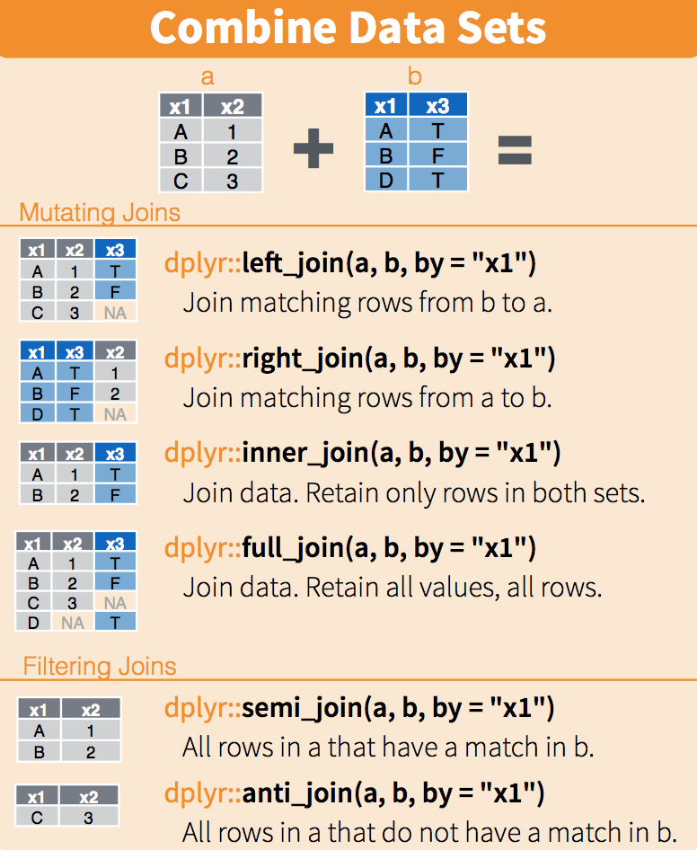

Data Wrangling
Required Reading
- This page.
Guiding Questions
- How can we reshape data into a useable
tidyform? - What is a join and why is it a common data wrangling maneuver?
- What is a primary key and why is it important to think about our data in this way?
- How do we deal with messy date variables?
Introduction to data wrangling
Many of the datasets used in this class have been made available to you as R objects, specifically as data frames. The US murders data, the reported heights data, and the Gapminder data were all data frames. Furthermore, much of the data is available in what is referred to as tidy form. The tidyverse packages and functions assume that the data is tidy and this assumption is a big part of the reason these packages work so well together.
However, very rarely in a data science project is data easily available as part of a package. People did quite a bit of work “behind the scenes” to get the original raw data into the tidy tables. Much more typical is for the data to be in a file, a database, or extracted from a document, including web pages, tweets, or PDFs. In these cases, the first step is to import the data into R and, when using the tidyverse, tidy up the data. This initial step in the data analysis process usually involves several, often complicated, steps to convert data from its raw form to the tidy form that greatly facilitates the rest of the analysis. We refer to this process as data wrangling.
Here we cover several common steps of the data wrangling process including tidying data, string processing, html parsing, working with dates and times, and text mining. Rarely are all these wrangling steps necessary in a single analysis, but data scientists will likely face them all at some point.
Reshaping data
As we have seen through the class, having data in tidy format is what makes the tidyverse flow. After the first step in the data analysis process, importing data, a common next step is to reshape the data into a form that facilitates the rest of the analysis. The tidyr package includes several functions that are useful for tidying data.
library(tidyverse)
library(dslabs)
path <- system.file("extdata", package="dslabs")
filename <- file.path(path, "fertility-two-countries-example.csv")
wide_data <- read_csv(filename)gather
One of the most used functions in the tidyr package is gather, which is useful for converting wide data into tidy data.
As with most tidyverse functions, the gather function’s first argument is the data frame that will be converted. Here we want to reshape the wide_data dataset so that each row represents a fertility observation, which implies we need three columns to store the year, country, and the observed value. In its current form, data from different years are in different columns with the year values stored in the column names. Through the second and third argument we will tell gather the column names we want to assign to the columns containing the current column names and observations, respectively. In this case a good choice for these two arguments would be year and fertility. Note that nowhere in the data file does it tell us this is fertility data. Instead, we deciphered this from the file name. Through the fourth argument we specify the columns containing observed values; these are the columns that will be gathered. The default is to gather all columns so, in most cases, we have to specify the columns. In our example we want columns 1960, 1961 up to 2015.
The code to gather the fertility data therefore looks like this:
new_tidy_data <- gather(wide_data, year, fertility, `1960`:`2015`)We can also use the pipe like this:
new_tidy_data <- wide_data %>% gather(year, fertility, `1960`:`2015`)We can see that the data have been converted to tidy format with columns year and fertility:
head(new_tidy_data)## # A tibble: 6 x 3
## country year fertility
## <chr> <chr> <dbl>
## 1 Germany 1960 2.41
## 2 South Korea 1960 6.16
## 3 Germany 1961 2.44
## 4 South Korea 1961 5.99
## 5 Germany 1962 2.47
## 6 South Korea 1962 5.79and that each year resulted in two rows since we have two countries and this column was not gathered. A somewhat quicker way to write this code is to specify which column will not be gathered, rather than all the columns that will be gathered:
new_tidy_data <- wide_data %>%
gather(year, fertility, -country)The new_tidy_data object looks like the original tidy_data we defined this way
data("gapminder")
tidy_data <- gapminder %>%
dplyr::filter(country %in% c("South Korea", "Germany") & !is.na(fertility)) %>%
dplyr::select(country, year, fertility)with just one minor difference. Can you spot it? Look at the data type of the year column:
class(tidy_data$year)## [1] "integer"class(new_tidy_data$year)## [1] "character"The gather function assumes that column names are characters. So we need a bit more wrangling before we are ready to make a plot. We need to convert the year column to be numbers. The gather function includes the convert argument for this purpose:
new_tidy_data <- wide_data %>%
gather(year, fertility, -country, convert = TRUE)
class(new_tidy_data$year)## [1] "integer"Note that we could have also used the mutate and as.numeric.
Now that the data is tidy, we can use this relatively simple ggplot code:
new_tidy_data %>% ggplot(aes(year, fertility, color = country)) +
geom_point()spread
As we will see in later examples, it is sometimes useful for data wrangling purposes to convert tidy data into wide data. We often use this as an intermediate step in tidying up data. The spread function is basically the inverse of gather. The first argument is for the data, but since we are using the pipe, we don’t show it. The second argument tells spread which variable will be used as the column names. The third argument specifies which variable to use to fill out the cells:
new_wide_data <- new_tidy_data %>% spread(year, fertility)
dplyr::select(new_wide_data, country, `1960`:`1967`)## # A tibble: 2 x 9
## country `1960` `1961` `1962` `1963` `1964` `1965` `1966` `1967`
## <chr> <dbl> <dbl> <dbl> <dbl> <dbl> <dbl> <dbl> <dbl>
## 1 Germany 2.41 2.44 2.47 2.49 2.49 2.48 2.44 2.37
## 2 South Korea 6.16 5.99 5.79 5.57 5.36 5.16 4.99 4.85The following diagram can help remind you how these two functions work:


(Image courtesy of RStudio1. CC-BY-4.0 license2. Cropped from original.)
separate
The data wrangling shown above was simple compared to what is usually required. In our example spreadsheet files, we include an illustration that is slightly more complicated. It contains two variables: life expectancy and fertility. However, the way it is stored is not tidy and, as we will explain, not optimal.
path <- system.file("extdata", package = "dslabs")
filename <- "life-expectancy-and-fertility-two-countries-example.csv"
filename <- file.path(path, filename)
raw_dat <- read_csv(filename)
dplyr::select(raw_dat, 1:5)## # A tibble: 2 x 5
## country `1960_fertility` `1960_life_expec~ `1961_fertility` `1961_life_expec~
## <chr> <dbl> <dbl> <dbl> <dbl>
## 1 Germany 2.41 69.3 2.44 69.8
## 2 South K~ 6.16 53.0 5.99 53.8First, note that the data is in wide format. Second, notice that this table includes values for two variables, fertility and life expectancy, with the column name encoding which column represents which variable. Encoding information in the column names is not recommended but, unfortunately, it is quite common. We will put our wrangling skills to work to extract this information and store it in a tidy fashion.
We can start the data wrangling with the gather function, but we should no longer use the column name year for the new column since it also contains the variable type. We will call it key, the default, for now:
dat <- raw_dat %>% gather(key, value, -country)
head(dat)## # A tibble: 6 x 3
## country key value
## <chr> <chr> <dbl>
## 1 Germany 1960_fertility 2.41
## 2 South Korea 1960_fertility 6.16
## 3 Germany 1960_life_expectancy 69.3
## 4 South Korea 1960_life_expectancy 53.0
## 5 Germany 1961_fertility 2.44
## 6 South Korea 1961_fertility 5.99The result is not exactly what we refer to as tidy since each observation (year-country combination) is associated with two, not one, rows. We want to have the values from the two variables, fertility and life expectancy, in two separate columns. The first challenge to achieve this is to separate the key column into the year and the variable type. Notice that the entries in this column separate the year from the variable name with an underscore:
dat$key[1:5]## [1] "1960_fertility" "1960_fertility" "1960_life_expectancy"
## [4] "1960_life_expectancy" "1961_fertility"Encoding multiple variables in a column name is such a common problem that the tidyverse package includes a function to separate these columns into two or more. Apart from the data, the separate function takes three arguments: the name of the column to be separated, the names to be used for the new columns, and the character that separates the variables. So, a first attempt at this is:
dat %>% separate(col = key, into = c("year", "variable_name"), sep = "_")The function does separate the values, but we run into a new problem. We receive the warning Additional pieces discarded in 112 rows [3, 4, 7,...]. (Earlier versions may give the error Too many values at 112 locations:) and that the life_expectancy variable is truncated to life. This is because the _ is used to separate life and expectancy, not just year and variable name! We could add a third column to catch this and let the separate function know which column to fill in with missing values, NA, when there is no third value. Here we tell it to fill the column on the right:
dat %>% separate(key, into = c("year", "first_variable_name", "second_variable_name"), fill = "right")## # A tibble: 224 x 5
## country year first_variable_name second_variable_name value
## <chr> <chr> <chr> <chr> <dbl>
## 1 Germany 1960 fertility <NA> 2.41
## 2 South Korea 1960 fertility <NA> 6.16
## 3 Germany 1960 life expectancy 69.3
## 4 South Korea 1960 life expectancy 53.0
## 5 Germany 1961 fertility <NA> 2.44
## 6 South Korea 1961 fertility <NA> 5.99
## 7 Germany 1961 life expectancy 69.8
## 8 South Korea 1961 life expectancy 53.8
## 9 Germany 1962 fertility <NA> 2.47
## 10 South Korea 1962 fertility <NA> 5.79
## # ... with 214 more rowsHowever, if we read the separate help file, we find that a better approach is to merge the last two variables when there is an extra separation:
dat %>% separate(key, into = c("year", "variable_name"), extra = "merge")## # A tibble: 224 x 4
## country year variable_name value
## <chr> <chr> <chr> <dbl>
## 1 Germany 1960 fertility 2.41
## 2 South Korea 1960 fertility 6.16
## 3 Germany 1960 life_expectancy 69.3
## 4 South Korea 1960 life_expectancy 53.0
## 5 Germany 1961 fertility 2.44
## 6 South Korea 1961 fertility 5.99
## 7 Germany 1961 life_expectancy 69.8
## 8 South Korea 1961 life_expectancy 53.8
## 9 Germany 1962 fertility 2.47
## 10 South Korea 1962 fertility 5.79
## # ... with 214 more rowsThis achieves the separation we wanted. However, we are not done yet. We need to create a column for each variable. As we learned, the spread function can do this:
dat %>%
separate(key, c("year", "variable_name"), extra = "merge") %>%
spread(variable_name, value)## # A tibble: 112 x 4
## country year fertility life_expectancy
## <chr> <chr> <dbl> <dbl>
## 1 Germany 1960 2.41 69.3
## 2 Germany 1961 2.44 69.8
## 3 Germany 1962 2.47 70.0
## 4 Germany 1963 2.49 70.1
## 5 Germany 1964 2.49 70.7
## 6 Germany 1965 2.48 70.6
## 7 Germany 1966 2.44 70.8
## 8 Germany 1967 2.37 71.0
## 9 Germany 1968 2.28 70.6
## 10 Germany 1969 2.17 70.5
## # ... with 102 more rowsThe data is now in tidy format with one row for each observation with three variables: year, fertility, and life expectancy.
unite
It is sometimes useful to do the inverse of separate, unite two columns into one. To demonstrate how to use unite, we show code that, although not the optimal approach, serves as an illustration. Suppose that we did not know about extra and used this command to separate:
dat %>%
separate(key, c("year", "first_variable_name", "second_variable_name"), fill = "right")## # A tibble: 224 x 5
## country year first_variable_name second_variable_name value
## <chr> <chr> <chr> <chr> <dbl>
## 1 Germany 1960 fertility <NA> 2.41
## 2 South Korea 1960 fertility <NA> 6.16
## 3 Germany 1960 life expectancy 69.3
## 4 South Korea 1960 life expectancy 53.0
## 5 Germany 1961 fertility <NA> 2.44
## 6 South Korea 1961 fertility <NA> 5.99
## 7 Germany 1961 life expectancy 69.8
## 8 South Korea 1961 life expectancy 53.8
## 9 Germany 1962 fertility <NA> 2.47
## 10 South Korea 1962 fertility <NA> 5.79
## # ... with 214 more rowsWe can achieve the same final result by uniting the second and third columns, then spreading the columns and renaming fertility_NA to fertility:
dat %>%
separate(key, c("year", "first_variable_name", "second_variable_name"), fill = "right") %>%
unite(variable_name, first_variable_name, second_variable_name) %>%
spread(variable_name, value) %>%
rename(fertility = fertility_NA)## # A tibble: 112 x 4
## country year fertility life_expectancy
## <chr> <chr> <dbl> <dbl>
## 1 Germany 1960 2.41 69.3
## 2 Germany 1961 2.44 69.8
## 3 Germany 1962 2.47 70.0
## 4 Germany 1963 2.49 70.1
## 5 Germany 1964 2.49 70.7
## 6 Germany 1965 2.48 70.6
## 7 Germany 1966 2.44 70.8
## 8 Germany 1967 2.37 71.0
## 9 Germany 1968 2.28 70.6
## 10 Germany 1969 2.17 70.5
## # ... with 102 more rowsTRY IT
- Run the following command to define the
co2_wideobject using theco2data built in to R (see?co2):
co2_wide <- data.frame(matrix(co2, ncol = 12, byrow = TRUE)) %>%
setNames(1:12) %>%
mutate(year = as.character(1959:1997))Use the gather function to wrangle this into a tidy dataset. Call the column with the CO2 measurements co2 and call the month column month. Call the resulting object co2_tidy.
- Plot CO2 versus month with a different curve for each year using this code:
co2_tidy %>% ggplot(aes(month, co2, color = year)) + geom_line()If the expected plot is not made, it is probably because co2_tidy$month is not numeric:
class(co2_tidy$month)Rewrite the call to gather using an argument that assures the month column will be numeric. Then make the plot.
- What do we learn from this plot?
- CO2 measures increase monotonically from 1959 to 1997.
- CO2 measures are higher in the summer and the yearly average increased from 1959 to 1997.
- CO2 measures appear constant and random variability explains the differences.
- CO2 measures do not have a seasonal trend.
- Now load the
admissionsdata set, which contains admission information for men and women across six majors and keep only the admitted percentage column:
load(admissions)
dat <- admissions %>% dplyr::select(-applicants)If we think of an observation as a major, and that each observation has two variables (men admitted percentage and women admitted percentage) then this is not tidy. Use the spread function to wrangle into tidy shape: one row for each major.
- Now we will try a more advanced wrangling challenge. We want to wrangle the admissions data so that for each major we have 4 observations:
admitted_men,admitted_women,applicants_menandapplicants_women. The trick we perform here is actually quite common: first gather to generate an intermediate data frame and then spread to obtain the tidy data we want. We will go step by step in this and the next two exercises.
Use the gather function to create a tmp data.frame with a column containing the type of observation admitted or applicants. Call the new columns key and value.
Now you have an object
tmpwith columnsmajor,gender,keyandvalue. Note that if you combine the key and gender, we get the column names we want:admitted_men,admitted_women,applicants_menandapplicants_women. Use the functionuniteto create a new column calledcolumn_name.Now use the
spreadfunction to generate the tidy data with four variables for each major.Now use the pipe to write a line of code that turns
admissionsto the table produced in the previous exercise.
Joining tables
The information we need for a given analysis may not be just in one table. For example, when forecasting elections we used the function left_join to combine the information from two tables. We also saw this in action using the WDI function (technically, the WDI API) in Project 2. Here we use a simpler example to illustrate the general challenge of combining tables.
Suppose we want to explore the relationship between population size for US states and electoral votes. We have the population size in this table:
library(tidyverse)
library(dslabs)
data(murders)
head(murders)## state abb region population total
## 1 Alabama AL South 4779736 135
## 2 Alaska AK West 710231 19
## 3 Arizona AZ West 6392017 232
## 4 Arkansas AR South 2915918 93
## 5 California CA West 37253956 1257
## 6 Colorado CO West 5029196 65and electoral votes in this one:
data(polls_us_election_2016)
head(results_us_election_2016)## state electoral_votes clinton trump others
## 1 California 55 61.7 31.6 6.7
## 2 Texas 38 43.2 52.2 4.5
## 3 Florida 29 47.8 49.0 3.2
## 4 New York 29 59.0 36.5 4.5
## 5 Illinois 20 55.8 38.8 5.4
## 6 Pennsylvania 20 47.9 48.6 3.6Just concatenating these two tables together will not work since the order of the states is not the same.
identical(results_us_election_2016$state, murders$state)## [1] FALSEThe join functions, described below, are designed to handle this challenge.
Joins
The join functions in the dplyr package (part of the tidyverse) make sure that the tables are combined so that matching rows are together. If you know SQL, you will see that the approach and syntax is very similar. The general idea is that one needs to identify one or more columns that will serve to match the two tables. Then a new table with the combined information is returned. Notice what happens if we join the two tables above by state using left_join (we will remove the others column and rename electoral_votes so that the tables fit on the page):
tab <- left_join(murders, results_us_election_2016, by = "state") %>%
dplyr::select(-others) %>%
rename(ev = electoral_votes)
head(tab)## state abb region population total ev clinton trump
## 1 Alabama AL South 4779736 135 9 34.4 62.1
## 2 Alaska AK West 710231 19 3 36.6 51.3
## 3 Arizona AZ West 6392017 232 11 45.1 48.7
## 4 Arkansas AR South 2915918 93 6 33.7 60.6
## 5 California CA West 37253956 1257 55 61.7 31.6
## 6 Colorado CO West 5029196 65 9 48.2 43.3The data has been successfully joined and we can now, for example, make a plot to explore the relationship:
library(ggrepel)
tab %>% ggplot(aes(population/10^6, ev, label = abb)) +
geom_point() +
geom_text_repel() +
scale_x_continuous(trans = "log2") +
scale_y_continuous(trans = "log2") +
geom_smooth(method = "lm", se = FALSE)
We see the relationship is close to linear with about 2 electoral votes for every million persons, but with very small states getting higher ratios.
In practice, it is not always the case that each row in one table has a matching row in the other. For this reason, we have several versions of join. To illustrate this challenge, we will take subsets of the tables above. We create the tables tab1 and tab2 so that they have some states in common but not all:
tab_1 <- slice(murders, 1:6) %>% dplyr::select(state, population)
tab_1## state population
## 1 Alabama 4779736
## 2 Alaska 710231
## 3 Arizona 6392017
## 4 Arkansas 2915918
## 5 California 37253956
## 6 Colorado 5029196tab_2 <- results_us_election_2016 %>%
dplyr::filter(state%in%c("Alabama", "Alaska", "Arizona",
"California", "Connecticut", "Delaware")) %>%
dplyr::select(state, electoral_votes) %>% rename(ev = electoral_votes)
tab_2## state ev
## 1 California 55
## 2 Arizona 11
## 3 Alabama 9
## 4 Connecticut 7
## 5 Alaska 3
## 6 Delaware 3We will use these two tables as examples in the next sections.
Left join
Suppose we want a table like tab_1, but adding electoral votes to whatever states we have available. For this, we use left_join with tab_1 as the first argument. We specify which column to use to match with the by argument.
left_join(tab_1, tab_2, by = "state")## state population ev
## 1 Alabama 4779736 9
## 2 Alaska 710231 3
## 3 Arizona 6392017 11
## 4 Arkansas 2915918 NA
## 5 California 37253956 55
## 6 Colorado 5029196 NANote that NAs are added to the two states not appearing in tab_2. Also, notice that this function, as well as all the other joins, can receive the first arguments through the pipe:
tab_1 %>% left_join(tab_2, by = "state")Right join
If instead of a table with the same rows as first table, we want one with the same rows as second table, we can use right_join:
tab_1 %>% right_join(tab_2, by = "state")## state population ev
## 1 Alabama 4779736 9
## 2 Alaska 710231 3
## 3 Arizona 6392017 11
## 4 California 37253956 55
## 5 Connecticut NA 7
## 6 Delaware NA 3Now the NAs are in the column coming from tab_1.
Inner join
If we want to keep only the rows that have information in both tables, we use inner_join. You can think of this as an intersection:
inner_join(tab_1, tab_2, by = "state")## state population ev
## 1 Alabama 4779736 9
## 2 Alaska 710231 3
## 3 Arizona 6392017 11
## 4 California 37253956 55Full join
If we want to keep all the rows and fill the missing parts with NAs, we can use full_join. You can think of this as a union:
full_join(tab_1, tab_2, by = "state")## state population ev
## 1 Alabama 4779736 9
## 2 Alaska 710231 3
## 3 Arizona 6392017 11
## 4 Arkansas 2915918 NA
## 5 California 37253956 55
## 6 Colorado 5029196 NA
## 7 Connecticut NA 7
## 8 Delaware NA 3Semi join
The semi_join function lets us keep the part of first table for which we have information in the second. It does not add the columns of the second. It isn’t often used:
semi_join(tab_1, tab_2, by = "state")## state population
## 1 Alabama 4779736
## 2 Alaska 710231
## 3 Arizona 6392017
## 4 California 37253956This gives the same result as:
tab_1 %>%
filter(state %in% tab_2$state) ## state population
## 1 Alabama 4779736
## 2 Alaska 710231
## 3 Arizona 6392017
## 4 California 37253956Anti join
The function anti_join is the opposite of semi_join. It keeps the elements of the first table for which there is no information in the second:
anti_join(tab_1, tab_2, by = "state")## state population
## 1 Arkansas 2915918
## 2 Colorado 5029196The following diagram summarizes the above joins:


(Image courtesy of RStudio3. CC-BY-4.0 license4. Cropped from original.)
Binding
Although we have yet to use it in this book, another common way in which datasets are combined is by binding them. Unlike the join function, the binding functions do not try to match by a variable, but instead simply combine datasets. If the datasets don’t match by the appropriate dimensions, one obtains an error.
Binding columns
The dplyr function bind_cols binds two objects by making them columns in a tibble. For example, we quickly want to make a data frame consisting of numbers we can use.
bind_cols(a = 1:3, b = 4:6)## # A tibble: 3 x 2
## a b
## <int> <int>
## 1 1 4
## 2 2 5
## 3 3 6This function requires that we assign names to the columns. Here we chose a and b.
Note that there is an R-base function cbind with the exact same functionality. An important difference is that cbind can create different types of objects, while bind_cols always produces a data frame.
bind_cols can also bind two different data frames. For example, here we break up the tab data frame and then bind them back together:
tab_1 <- tab[, 1:3]
tab_2 <- tab[, 4:6]
tab_3 <- tab[, 7:8]
new_tab <- bind_cols(tab_1, tab_2, tab_3)
head(new_tab)## state abb region population total ev clinton trump
## 1 Alabama AL South 4779736 135 9 34.4 62.1
## 2 Alaska AK West 710231 19 3 36.6 51.3
## 3 Arizona AZ West 6392017 232 11 45.1 48.7
## 4 Arkansas AR South 2915918 93 6 33.7 60.6
## 5 California CA West 37253956 1257 55 61.7 31.6
## 6 Colorado CO West 5029196 65 9 48.2 43.3Binding by rows
The bind_rows function is similar to bind_cols, but binds rows instead of columns:
tab_1 <- tab[1:2,]
tab_2 <- tab[3:4,]
bind_rows(tab_1, tab_2)## state abb region population total ev clinton trump
## 1 Alabama AL South 4779736 135 9 34.4 62.1
## 2 Alaska AK West 710231 19 3 36.6 51.3
## 3 Arizona AZ West 6392017 232 11 45.1 48.7
## 4 Arkansas AR South 2915918 93 6 33.7 60.6This is based on an R-base function rbind.
Set operators
Another set of commands useful for combining datasets are the set operators. When applied to vectors, these behave as their names suggest. Examples are intersect, union, setdiff, and setequal. However, if the tidyverse, or more specifically dplyr, is loaded, these functions can be used on data frames as opposed to just on vectors.
Intersect
You can take intersections of vectors of any type, such as numeric:
intersect(1:10, 6:15)## [1] 6 7 8 9 10or characters:
intersect(c("a","b","c"), c("b","c","d"))## [1] "b" "c"The dplyr package includes an intersect function that can be applied to tables with the same column names. This function returns the rows in common between two tables. To make sure we use the dplyr version of intersect rather than the base package version, we can use dplyr::intersect like this:
tab_1 <- tab[1:5,]
tab_2 <- tab[3:7,]
dplyr::intersect(tab_1, tab_2)## state abb region population total ev clinton trump
## 1 Arizona AZ West 6392017 232 11 45.1 48.7
## 2 Arkansas AR South 2915918 93 6 33.7 60.6
## 3 California CA West 37253956 1257 55 61.7 31.6Union
Similarly union takes the union of vectors. For example:
union(1:10, 6:15)## [1] 1 2 3 4 5 6 7 8 9 10 11 12 13 14 15union(c("a","b","c"), c("b","c","d"))## [1] "a" "b" "c" "d"The dplyr package includes a version of union that combines all the rows of two tables with the same column names.
tab_1 <- tab[1:5,]
tab_2 <- tab[3:7,]
dplyr::union(tab_1, tab_2)## state abb region population total ev clinton trump
## 1 Alabama AL South 4779736 135 9 34.4 62.1
## 2 Alaska AK West 710231 19 3 36.6 51.3
## 3 Arizona AZ West 6392017 232 11 45.1 48.7
## 4 Arkansas AR South 2915918 93 6 33.7 60.6
## 5 California CA West 37253956 1257 55 61.7 31.6
## 6 Colorado CO West 5029196 65 9 48.2 43.3
## 7 Connecticut CT Northeast 3574097 97 7 54.6 40.9Note that we get 7 unique rows from this. We do not get duplicated rows from the overlap in 1:5 and 3:7. If we were to bind_rows on the two subsets, we would get duplicates.
setdiff
The set difference between a first and second argument can be obtained with setdiff. Unlike intersect and union, this function is not symmetric:
setdiff(1:10, 6:15)## [1] 1 2 3 4 5setdiff(6:15, 1:10)## [1] 11 12 13 14 15As with the functions shown above, dplyr has a version for data frames:
tab_1 <- tab[1:5,]
tab_2 <- tab[3:7,]
dplyr::setdiff(tab_1, tab_2)## state abb region population total ev clinton trump
## 1 Alabama AL South 4779736 135 9 34.4 62.1
## 2 Alaska AK West 710231 19 3 36.6 51.3setequal
Finally, the function setequal tells us if two sets are the same, regardless of order. So notice that:
setequal(1:5, 1:6)## [1] FALSEbut:
setequal(1:5, 5:1)## [1] TRUEWhen applied to data frames that are not equal, regardless of order, the dplyr version provides a useful message letting us know how the sets are different:
dplyr::setequal(tab_1, tab_2)## [1] FALSETRY IT
- Install and load the Lahman library. This database includes data related to baseball teams. It includes summary statistics about how the players performed on offense and defense for several years. It also includes personal information about the players.
The Batting data frame contains the offensive statistics for all players for many years. You can see, for example, the top 10 hitters by running this code:
library(Lahman)
top <- Batting %>%
dplyr::filter(yearID == 2016) %>%
arrange(desc(HR)) %>%
slice(1:10)
top %>% as_tibble()But who are these players? We see an ID, but not the names. The player names are in this table
Master %>% as_tibble()We can see column names nameFirst and nameLast. Use the left_join function to create a table of the top home run hitters. The table should have playerID, first name, last name, and number of home runs (HR). Rewrite the object top with this new table.
Now use the
Salariesdata frame to add each player’s salary to the table you created in exercise 1. Note that salaries are different every year so make sure to filter for the year 2016, then useright_join. This time show first name, last name, team, HR, and salary.In a previous exercise, we created a tidy version of the
co2dataset:
co2_wide <- data.frame(matrix(co2, ncol = 12, byrow = TRUE)) %>%
setNames(1:12) %>%
mutate(year = 1959:1997) %>%
gather(month, co2, -year, convert = TRUE)We want to see if the monthly trend is changing so we are going to remove the year effects and then plot the results. We will first compute the year averages. Use the group_by and summarize to compute the average co2 for each year. Save in an object called yearly_avg.
Now use the
left_joinfunction to add the yearly average to theco2_widedataset. Then compute the residuals: observed co2 measure - yearly average.Make a plot of the seasonal trends by year but only after removing the year effect.
A note about merging and dupliacted rows
When we merge data, we have to be very careful about duplicated rows. Specifically, we have to be certain that the fields we use to join on are unique or that we know they aren’t unique and intend to duplicate rows.
When we have tidy data, we have one row per observation. When we join data that has more than one row per observation, the new dataset will no longer be tidy. For instance:
tidyData <- bind_cols( state = c('MI','CA','MI','CA'),
year = c(2001, 2002, 2001, 2002),
Arrests = c(10, 21, 30, 12))
notTidyData <- bind_cols(state = c('MI','MI','MI','CA','CA','CA'),
County = c('Ingham','Clinton','Wayne','Orange','Los Angeles','Kern'),
InNOut_locations = c(0,0,0,20, 31, 8))
head(tidyData)## # A tibble: 4 x 3
## state year Arrests
## <chr> <dbl> <dbl>
## 1 MI 2001 10
## 2 CA 2002 21
## 3 MI 2001 30
## 4 CA 2002 12head(notTidyData)## # A tibble: 6 x 3
## state County InNOut_locations
## <chr> <chr> <dbl>
## 1 MI Ingham 0
## 2 MI Clinton 0
## 3 MI Wayne 0
## 4 CA Orange 20
## 5 CA Los Angeles 31
## 6 CA Kern 8If we use the only common field, state to merge tidyData, which is unique on state and year, to notTidyData, which is unique on county, then every time we see state in our “left” data, we will get all three counties in that state and for that year. Even worse, we will get the InNOut_locations tally repeated for every matching state!
joinedData <- left_join(tidyData, notTidyData, by = c('state'))
joinedData## # A tibble: 12 x 5
## state year Arrests County InNOut_locations
## <chr> <dbl> <dbl> <chr> <dbl>
## 1 MI 2001 10 Ingham 0
## 2 MI 2001 10 Clinton 0
## 3 MI 2001 10 Wayne 0
## 4 CA 2002 21 Orange 20
## 5 CA 2002 21 Los Angeles 31
## 6 CA 2002 21 Kern 8
## 7 MI 2001 30 Ingham 0
## 8 MI 2001 30 Clinton 0
## 9 MI 2001 30 Wayne 0
## 10 CA 2002 12 Orange 20
## 11 CA 2002 12 Los Angeles 31
## 12 CA 2002 12 Kern 8Because we asked for all columns of tidyData that matched (on state) in notTidyData, we get replicated Arrests - look at MI in 2001 in the first three rows. The original data had 10 Arrests in Michigan in 2001. Now, for every MI County in notTidyData, we have replicated the statewide arrests!
sum(joinedData$Arrests)## [1] 219sum(tidyData$Arrests)## [1] 73Yikes! We now have 3x the number of arrests in our data.
sum(joinedData$InNOut_locations)## [1] 118sum(notTidyData$InNOut_locations)## [1] 59And while we might like that we have 3x the In-N-Out locations, we definitely think our data shouldn’t suddenly have more.
The reason this happens is that we do not have a unique key variable. In the WDI tip in Project 2, we didn’t have a single unique key variable - there were multiple values of iso2 country code in the data because we had multiple years for each iso2. Thus, when we merged, use used by = c('iso2','year') because the iso2 x year combination was the unique key.
The lesson is this: always know what your join is doing. Know your unique keys. Use sum(duplicated(tidyData$key)) to see if all values are unique, or NROW(unique(tidyData %>% dplyr::select(key1, key2))) to see if all rows are unique over the 2 keys (replacing “key1” and “key2” with your key fields).
If it shouldn’t add rows, then make sure the new data has the same number of rows as the old one, or use setequal to check.
Parsing dates and times
The date data type
We have described three main types of vectors: numeric, character, and logical. In data science projects, we very often encounter variables that are dates. Although we can represent a date with a string, for example November 2, 2017, once we pick a reference day, referred to as the epoch, they can be converted to numbers by calculating the number of days since the epoch. Computer languages usually use January 1, 1970, as the epoch. So, for example, January 2, 2017 is day 1, December 31, 1969 is day -1, and November 2, 2017, is day 17,204.
Now how should we represent dates and times when analyzing data in R? We could just use days since the epoch, but then it is almost impossible to interpret. If I tell you it’s November 2, 2017, you know what this means immediately. If I tell you it’s day 17,204, you will be quite confused. Similar problems arise with times and even more complications can appear due to time zones.
For this reason, R defines a data type just for dates and times. We saw an example in the polls data:
library(tidyverse)
library(dslabs)
data("polls_us_election_2016")
polls_us_election_2016$startdate %>% head## [1] "2016-11-03" "2016-11-01" "2016-11-02" "2016-11-04" "2016-11-03"
## [6] "2016-11-03"These look like strings, but they are not:
class(polls_us_election_2016$startdate)## [1] "Date"Look at what happens when we convert them to numbers:
as.numeric(polls_us_election_2016$startdate) %>% head## [1] 17108 17106 17107 17109 17108 17108It turns them into days since the epoch. The as.Date function can convert a character into a date. So to see that the epoch is day 0 we can type
as.Date("1970-01-01") %>% as.numeric## [1] 0Plotting functions, such as those in ggplot, are aware of the date format. This means that, for example, a scatterplot can use the numeric representation to decide on the position of the point, but include the string in the labels:
polls_us_election_2016 %>% dplyr::filter(pollster == "Ipsos" & state =="U.S.") %>%
ggplot(aes(startdate, rawpoll_trump)) +
geom_line()
Note in particular that the month names are displayed, a very convenient feature.
The lubridate package
The tidyverse includes functionality for dealing with dates through the lubridate package.
library(lubridate)We will take a random sample of dates to show some of the useful things one can do:
set.seed(2002)
dates <- sample(polls_us_election_2016$startdate, 10) %>% sort
dates## [1] "2016-05-31" "2016-08-08" "2016-08-19" "2016-09-22" "2016-09-27"
## [6] "2016-10-12" "2016-10-24" "2016-10-26" "2016-10-29" "2016-10-30"The functions year, month and day extract those values:
tibble(date = dates,
month = month(dates),
day = day(dates),
year = year(dates))## # A tibble: 10 x 4
## date month day year
## <date> <dbl> <int> <dbl>
## 1 2016-05-31 5 31 2016
## 2 2016-08-08 8 8 2016
## 3 2016-08-19 8 19 2016
## 4 2016-09-22 9 22 2016
## 5 2016-09-27 9 27 2016
## 6 2016-10-12 10 12 2016
## 7 2016-10-24 10 24 2016
## 8 2016-10-26 10 26 2016
## 9 2016-10-29 10 29 2016
## 10 2016-10-30 10 30 2016We can also extract the month labels:
month(dates, label = TRUE)## [1] May Aug Aug Sep Sep Oct Oct Oct Oct Oct
## 12 Levels: Jan < Feb < Mar < Apr < May < Jun < Jul < Aug < Sep < ... < DecAnother useful set of functions are the parsers that convert strings into dates. The function ymd assumes the dates are in the format YYYY-MM-DD and tries to parse as well as possible.
x <- c(20090101, "2009-01-02", "2009 01 03", "2009-1-4",
"2009-1, 5", "Created on 2009 1 6", "200901 !!! 07")
ymd(x)## [1] "2009-01-01" "2009-01-02" "2009-01-03" "2009-01-04" "2009-01-05"
## [6] "2009-01-06" "2009-01-07"A further complication comes from the fact that dates often come in different formats in which the order of year, month, and day are different. The preferred format is to show year (with all four digits), month (two digits), and then day, or what is called the ISO 8601. Specifically we use YYYY-MM-DD so that if we order the string, it will be ordered by date. You can see the function ymd returns them in this format.
But, what if you encounter dates such as “09/01/02”? This could be September 1, 2002 or January 2, 2009 or January 9, 2002. In these cases, examining the entire vector of dates will help you determine what format it is by process of elimination. Once you know, you can use the many parses provided by lubridate.
For example, if the string is:
x <- "09/01/02"The ymd function assumes the first entry is the year, the second is the month, and the third is the day, so it converts it to:
ymd(x)## [1] "2009-01-02"The mdy function assumes the first entry is the month, then the day, then the year:
mdy(x)## [1] "2002-09-01"The lubridate package provides a function for every possibility:
ydm(x)## [1] "2009-02-01"myd(x)## [1] "2001-09-02"dmy(x)## [1] "2002-01-09"dym(x)## [1] "2001-02-09"The lubridate package is also useful for dealing with times. In R base, you can get the current time typing Sys.time(). The lubridate package provides a slightly more advanced function, now, that permits you to define the time zone:
now()## [1] "2022-01-05 16:08:14 EST"now("GMT")## [1] "2022-01-05 21:08:14 GMT"You can see all the available time zones with OlsonNames() function.
We can also extract hours, minutes, and seconds:
now() %>% hour()## [1] 16now() %>% minute()## [1] 8now() %>% second()## [1] 14.90685The package also includes a function to parse strings into times as well as parsers for time objects that include dates:
x <- c("12:34:56")
hms(x)## [1] "12H 34M 56S"x <- "Nov/2/2012 12:34:56"
mdy_hms(x)## [1] "2012-11-02 12:34:56 UTC"This package has many other useful functions. We describe two of these here that we find particularly useful.
The make_date function can be used to quickly create a date object. It takes three arguments: year, month, day, hour, minute, seconds, and time zone defaulting to the epoch values on UTC time. So create an date object representing, for example, July 6, 2019 we write:
make_date(2019, 7, 6)## [1] "2019-07-06"To make a vector of January 1 for the 80s we write:
make_date(1980:1989)## [1] "1980-01-01" "1981-01-01" "1982-01-01" "1983-01-01" "1984-01-01"
## [6] "1985-01-01" "1986-01-01" "1987-01-01" "1988-01-01" "1989-01-01"Another very useful function is the round_date. It can be used to round dates to nearest year, quarter, month, week, day, hour, minutes, or seconds. So if we want to group all the polls by week of the year we can do the following:
polls_us_election_2016 %>%
mutate(week = round_date(startdate, "week")) %>%
group_by(week) %>%
summarize(margin = mean(rawpoll_clinton - rawpoll_trump)) %>%
qplot(week, margin, data = .)
Date objects can be added to and subtracted from with hours, minutes, etc.
startDate <- ymd_hms('2021-06-14 12:20:57')
startDate + seconds(4)## [1] "2021-06-14 12:21:01 UTC"startDate + hours(1) + days(2) - seconds(10)## [1] "2021-06-16 13:20:47 UTC"You can even calculate time differences in specific units:
endDate = ymd_hms('2021-06-15 01:00:00')
endDate - startDate## Time difference of 12.65083 hoursdifftime(endDate, startDate, units = 'days')## Time difference of 0.5271181 daysNote that both of these result in a difftime object. You can use as.numeric(difftime(endDate, startDate)) to get the numeric difference in times.
Sequences can be created as well:
seq(from = startDate, to = endDate, by = 'hour')## [1] "2021-06-14 12:20:57 UTC" "2021-06-14 13:20:57 UTC"
## [3] "2021-06-14 14:20:57 UTC" "2021-06-14 15:20:57 UTC"
## [5] "2021-06-14 16:20:57 UTC" "2021-06-14 17:20:57 UTC"
## [7] "2021-06-14 18:20:57 UTC" "2021-06-14 19:20:57 UTC"
## [9] "2021-06-14 20:20:57 UTC" "2021-06-14 21:20:57 UTC"
## [11] "2021-06-14 22:20:57 UTC" "2021-06-14 23:20:57 UTC"
## [13] "2021-06-15 00:20:57 UTC"